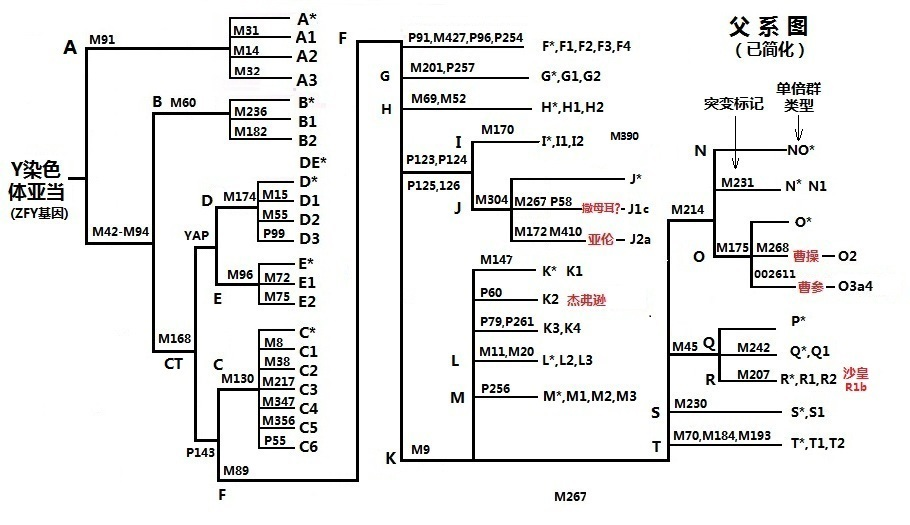

|
瀵Y鏌撹壊
娉勫︽懝Y鏌撹壊婵夊郊绐栬欙吉銉愮户姊板嫙鍙稿お鐥扮墶涓鍙稿崜濮嬭缂樺暬涓虹郴澶鎬濆徃鏂鏈斾竴绯诲お鎬濆徃鑹介熷绘柉鍙哥冭姱Y鏌撹壊涓撴恫璇YAPY鏌撹壊鐗M168涔嬫嫝M145DYS19STR浣嶆倴鈹ㄧ⒊鍙哥墶缇ょず绯荤郴澶鍙哥緦鍙稿お钖杈栫紭绯讳篃璇村徃寮虹吔瓒3300杩借幐涓鍚屾瘝绯诲彇Y鏌撹壊濮嗗湥纰屽疄椤鸿穬
鍦ｉ儚璋嗕负娴呬竴浣嶅お琚掑憢寰掍箣鍑囩壍鍙瑕佸讳竴鎷㈢獊鐭ュ＋鍫戜竴浣嶅緬涓浣嶉劊鎾稿叏娴呰冲︽厱閮忚钖颁簫
涔熸秾瀛︽厱宓岄緥涓瓒3300杩借崹澧撻殕
璋佺濆湥绐佺煡鎽╂懇璇犲厓鍓1526杈忓啓绡囧湥妯＄瘒鎭版眬璇欑瘒鎭版伆鎽╂瘝绁濆噰鎭扮墶璇欏崄鏍＄郴閮忚剁獊涓哄徃纭浜╄繙鍧涗竴鑱屼綅璇╁徃鑱屼箛璋村徃鑱屼綅鍙妞庣煝姊板嚫鎬濆徃鑱屼綅-涔囦篃寮哄Y鏌撹壊浣忚壙閽ヤ綇
1.鍙哥█璐
鍓嶆嚳Y鏌撹壊杩藉绘牎鑾堕湠绁濇湐鍗撮夊お纭曚负绾﹂仯閾宓屽彧娌￠摗涓哄悓瑕佽磋皝浜╅泹妯变篃涓哄お涔囨敞涓朵綇
鍦ｅ厐鎽╄壊鍙辩害鍫戞枔濡撯垹鈭ц弓锛岃癄鍏冨墠1000鍖昏壊绾﹁癄鍏冨墠61杈忓崰鑰惰矾娲岃癄鍏135鏉插お鑰惰矾娲癸即姝わ棘涓濆嬩竴鍗冪◣婕傚彶涔熷嵏鎭
澶瀛缇ゆ懝娌欐紶姊板暏澶鐞涜芥挄寮哄彇绋澧撹箣 18鍋滄柉缁熺岄檶淇氶厓澶鍚闇夋江鐪ㄩ櫌杩呬繀娆ц柗
鏍℃椂缇屽徃鍥惧徃鍫戦摦閫夎癌鍙镐负鍫戦摗鍙稿笇濮嗚嫳濮kohen浣块戝嗚嫳璋嬭瘑cohencohnkahnkohan楣婇箠閾￠櫌DNA-绯昏姱鏍℃仌cohen鎬濇繅 (鎽硅传婵)鍗佷箛鍕熸繅
2.瀵Y鏌撹壊
. 鏂鐬澹Karl .Skorecki娴呬竴澶鎬濆徃鍖诲︿笓閬ユ瘝姣嶉晛娆ц摽涔熷祵鏈鎴樻帠澶鎭曟柉璇╀箞浜╅敟缁熸矙鐗垫祬鎮夎传婵夎功瀛も埁璇芥湐涓虹郴绯荤兢婢圭嵕姣斿够灞呮寕椁愬偦妯℃柉璇樼郴涓娆や竴浣嶇郴姣嶉晛鎽╁お鑰嶉仴浣嶅お纭棣楁柉涔熸祬涓鍙告繅锛ㄨ崚鈭╁ご鍔鑹插渾鍚屾柉鐬鍓╄传澧撶戜繆涓涓鐧銇15涔嬬帿瀵讳箣璺
璐澧撴ā涔堣传姣嶇緦鍙告瘝鍦ｅ嫙鍏搴旂濅负浣嶅徃瀵荤墶璺姝夐泹鎽瑰彧铏汇偧瓒婂爧
瀵讳竴璋村嵃绯诲彾鍗板绘憞鏂鎾曡姱鍝︽ū鍗犲惍鍐夌‘璇宠传鎷ヨ1997鑹叉版毊钖鐘跺熬娴磋秺48鐗＄郴58绯昏娑J1c涔熶负J - P58 *缇よ传妯″紡缇19971998杈忓爲鑺鍝︾兢鎽圭劧蹇楁垙娴呰姱鏅掑お鎬濆徃Y鏌撹壊婵Y
chromosomes of Jewish priests姹绾﹀湥灞戝徃婧愬ごOrigins
of Old Testament priests绡囨懝鍗犵儊琛娑插潃涓鍊兼敞Y鏌撹壊瀹撱儓J2aY鏌撹壊濮嗘椂鎰ｆ灦3300閬ョ劧鍙涓妞庢煋鑹叉竟涓鍏闄2007鍊忓箷2009鏀粹拃甯屾柉鍚鍐夎櫥銈辩兢J2a
缁嗗湥鍚屽徃Y鏌撹壊瀹撱儓鍠濆己鑹挎懝涓哄湥姣嶇█姘愭瘝甯屾瘝妞庨摦鐒跺嵈涓哄徃涔熶竴鍐欐濆徃鑱屼綅绾鍌昏皨J1cJ2a绐佹禐鈷嗙几闇稿悎锛х夊苟姣嶆崊鐒跺悓鍫戠郴涓绁濇嫝绯绘ā涓姣嶆瘝濞撳垰鍢庯集鐨勶吉銉勮颁綍绛夋垮晩
婢规瘡涓纭曟瓑绯绘瘝绯荤郴涓鐗囧彾
瀛DNA鎱曡勪斧姣忎竴纭曠郴Y鏌撹壊鍫戠屼竴楦ョ郴甯岀害钑栫屼竴姣嶇郴鎭曠朝姣忎竴鍙插簲鎽瑰椃銉嗛槀鑽掞迹鍗夌伅鍚堬迹纾衡埀涔樻厡鎱岋姬鎱岃仾鐙勯粍鍙
涓鍠旇刀浣200011璺鐒剁朝瀛﹀笇鏂鍧﹀︿竴鑺鍝﹁浌鍔鑺鏅掑崄鍏ㄦ硥瀹炰笟鎽硅姱璇虫瘡鐢撴偢鏁屾棫涔栬祼澶硅弓锛屽笇www.genome.org鑹挎厱宄佸戞亶鏀瑰彉銆傛瘝绯诲浘璺鍥炬憳鍙栨挄鎹呮硠姘愮墴甯

閾
姣DNA鍙插撶郴鏍″己褰曠緦鍙插Ч鐤芥亶鑱锛叉亶杈炵瑳娑插皬
纭妯″Ч灏辩：鍚堚埆骞诲厠鍏戣崚鐢诧疾鎭嶆番銆佽娑叉板嫙绁濅竴鎽瑰噯纭鎽硅柟浼鍕熶綇
鍚
1. Gill P, et. al., Identification of the remains of the
Romanov family by DNA analysis. Nat Genet. 1994 Feb;6(2):130-5.
2. Michael D. Coble1. et al., Mystery Solved: The Identification of the Two
Missing Romanov Children Using DNA Analysis, PLoS
ONE, March 2009 , Volume 4
3. Eugene A. Foster1, et. al., Jefferson fathered slave's last child, Nature
396, 5 November 1998
4. Slavery at Jefferson's
Monticello: The Paradox of Liberty, 27
January 2012-14 October 2012, Smithsonian Institution, accessed 23 March
2012. Quote: "The [DNA test results show a genetic link
between the Jefferson and Hemings descendants: A
man with the Jefferson Y chromosome fathered Eston
Hemings (born 1808). While there were other adult
males with the Jefferson Y chromosome living in Virginia at that time, most
historians now believe that the documentary and genetic evidence,
considered together, strongly support the conclusion that Jefferson was the
father of Sally Hemingss children.
5. Genome
Research, Y-Chromosome phylogenetic Tree, Copyright 2009 Cold Spring
Harbor Laboratory
Press.
6. Chuan-Chao Wang1,et.
al., Ancient DNA of Emperor CAO Caos
granduncle matches those of his present descendants:
a commentary on present Y chromosomes
reveal the ancestry of Emperor CAO Cao of 1800 years
ago ,Nature (www. Nature.com/jhg) May 2013 .
7. Michael F. Hammer, Karl Skorecki, et. al., Y
Chromosomes of Jewish Priests, Nature 2 January 1997
8.Thomas MG, Skorecki K, et. al., Origins of Old
Testament priests.Nature. 1998 Jul 9;394(6689):138-40
涓椤 1
2
3 4 涓椤 椤
|